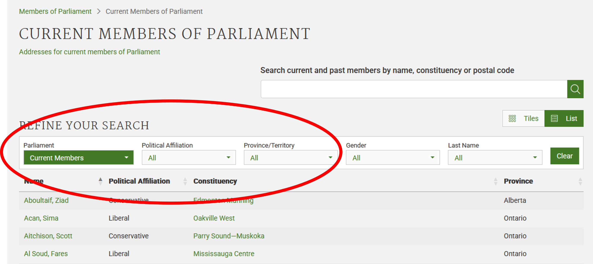
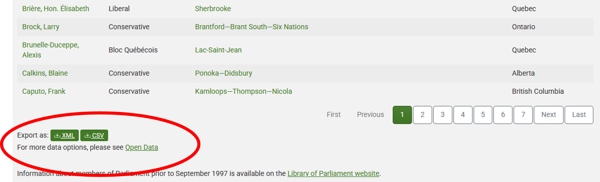

What is Web Scraping?
Last updated on 2026-01-14 | Edit this page
Estimated time: 0 minutes
Overview
Questions
- What is web scraping and why is it useful?
- What are typical use cases for web scraping?
Objectives
After completing this episode, participants should be able to…
- Be able to navigate around a website, understanding the concept of structured data
- Discuss how data can be extracted from web pages
What is web scraping?
Web scraping is a technique for extracting information from websites. This can be done manually but it is usually faster, more efficient and less error-prone to automate the task.
Web scraping allows you to acquire non-tabular or poorly structured data from websites and convert it into a usable, structured format, such as a .csv file or spreadsheet.
Scraping is about more than just acquiring data: it can also help you archive data and track changes to data online.
It is closely related to the practice of web indexing, which is what search engines like Google do when mass-analysing the Web to build their indices. But contrary to web indexing, which typically parses the entire content of a web page to make it searchable, web scraping targets specific information on the pages visited.
For example, online stores will often scour the publicly available pages of their competitors, scrape item prices, and then use this information to adjust their own prices. Another common practice is “contact scraping” in which personal information like email addresses or phone numbers is collected for marketing purposes.
Web scraping is also increasingly being used by scholars to create data sets for text mining projects; these might be collections of journal articles or digitised texts. The practice of data journalism, in particular, relies on the ability of investigative journalists to harvest data that is not always presented or published in a form that allows analysis.
Example: Scraping parliamentary websites for contact information
In this workshop, we will learn how to extract information from various web pages. Different webpages can have widely differing formats which will affect our decisions as to which method of scraping data might be appropriate.
Before we can make such decisions we need to have some understanding of the makeup of a webpage. Let’s start by looking at the list of members of the Canadian parliament, which is available on the Parliament of Canada website
This is how this page appears in December 2025:

There are several features (circled in the image above) that make the data on this page easier to work with. The search, reorder, refine features and display modes hint that the data is actually stored in a (structured) database before being displayed on this page. The data can be readily downloaded either as a comma separated values (.csv) file or as XML for re-use in their own database, spreadsheet or computer program.
Even though the information displayed in the view above is not labelled, anyone visiting this site with some knowledge of Canadian geography and politics can see what information pertains to the politicians’ names, the geographical area they come from and the political party they represent. This is because human beings are good at using context and prior knowledge to quickly categorise information.
Computers, on the other hand, cannot do this unless we provide them with more information. If we examine the source HTML code of this page, we can see that the information displayed has a consistent structure:
HTML
(...)
<tr role="row" id="mp-list-id-25446">
<td data-sort="Allison Dean" class="sorting_1">
<a href="/members/en/dean-allison(25446)">
Allison, Dean
</a>
</td>
<td data-sort="Conservative">Conservative</td>
<td data-sort="Niagara West">
<a href="/members/en/constituencies/niagara-west(1124)">Niagara West</a>
</td>
<td data-sort="Ontario">Ontario</td>
</tr>
(...)Using this structure, we may be able to instruct a computer to look for all parliamentarians from Alberta and list their names and caucus information.
Structured vs unstructured data
When presented with information, human beings are good at quickly categorizing it and extracting the data that they are interested in. For example, when we look at a magazine rack, provided the titles are written in a script that we are able to read, we can rapidly figure out the titles of the magazines, the stories they contain, the language they are written in, etc. and we can probably also easily organize them by topic, recognize those that are aimed at children, or even whether they lean toward a particular end of the political spectrum. Computers have a much harder time making sense of such unstructured data unless we specifically tell them what elements data is made of, for example by adding labels such as this is the title of this magazine or this is a magazine about food. Data in which individual elements are separated and labelled is said to be structured.
Let’s look now at the current list of members for the UK House of Commons.
This page also displays a list of names, political and geographical affiliation. There is a search box and a filter option, but no obvious way to download this information and reuse it.
Here is the code for this page:
HTML
(...)
<a class="card card-member" href="/member/172/contact">
<div class="card-inner">
<div class="content">
<div class="image-outer">
<div class="image"
aria-label="Image of Ms Diane Abbott"
style="background-image: url(https://members-api.parliament.uk/api/Members/172/Thumbnail); border-color: #909090;"></div>
</div>
<div class="primary-info">
Ms Diane Abbott
</div>
<div class="secondary-info">
Independent
</div>
</div>
<div class="info">
<div class="info-inner">
<div class="indicators-left">
<div class="indicator indicator-label">
Hackney North and Stoke Newington
</div>
</div>
<div class="clearfix"></div>
</div>
</div>
</div>
</a>
(...)We see that this data has been structured for displaying purposes (it is arranged in rows inside a table) but the different elements of information are not clearly labelled.
What if we wanted to download this dataset and, for example, compare it with the Canadian list of MPs to analyze gender representation, or the representation of political forces in the two groups? We could try copy-pasting the entire table into a spreadsheet or even manually copy-pasting the names and parties in another document, but this can quickly become impractical when faced with a large set of data. What if we wanted to collect this information for every country that has a parliamentary system?
Fortunately, there are tools to automate at least part of the process. This technique is called web scraping.
“Web scraping (web harvesting or web data extraction) is a computer software technique of extracting information from websites.” (Source: Wikipedia)
Web scraping typically targets one web site at a time to extract unstructured information and put it in a structured form for reuse.
Web scraping might not be necessary …
As useful as scraping is, there might be better options for the task. Choose the right (i.e. the easiest) tool for the job.
- Check whether or not you can easily copy and paste data from a site into Excel or Google Sheets. This might be quicker than scraping.
- Check whether there is data available on the website for download
(you may need to search around the website to find this but it may save
time overall).
- For example, the UK Parliament website has a large library of data published for re-use.
- Check if the site or service already provides an API to extract
structured data. If it does, that will be a much more efficient and
effective pathway.
- Good examples are the Facebook API, the X APIs or the YouTube comments API.
- The UK Parliament website that we have been looking at provides a set of APIs in its Developer Hub
- For much larger needs, Freedom of information Act (FOIA) requests can be useful. Be specific about the formats required for the data you want.
… but if it is
In the next episodes, we will continue exploring the examples above and try different techniques to extract the information they contain.
Before we launch into web scraping proper however, we need to look a bit more closely at how information is organized within an HTML document and how to build queries to access a specific subset of that information.
References
- Humans are good at categorizing information, computers not so much.
- Often, data on a web site is not properly structured, making its extraction difficult.
- Web scraping is the process of automating the extraction of data from web sites.
- Tools may be available on a web page which enable data to be downloaded directly.